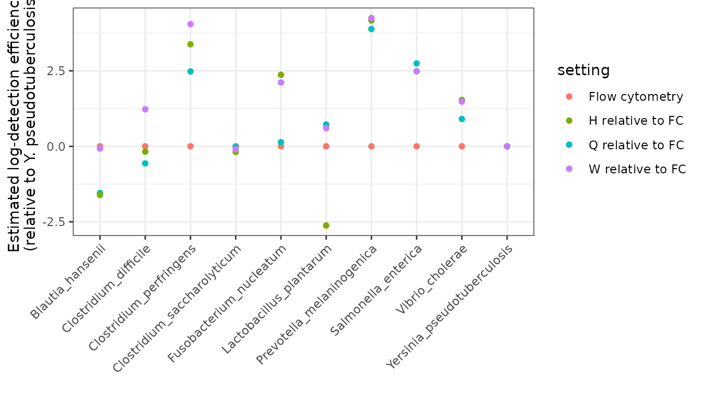

Comparing detection efficiencies across experiments
Amy D Willis and David S Clausen
Source:vignettes/compare-experiments.Rmd
compare-experiments.RmdScope and purpose
In this vignette, we will walk through how to use
tinyvamp to estimate and compare detection efficiencies
across batches or experiments. We will consider the Phase 2 data of
Costea et al. (2017), who spiked-in a 10-member synthetic community to
10 samples, which were then sequenced using three shotgun metagenomic
sequencing experimental protocols (protocols H, Q and W). Abundances
were also measured using flow cytometry.
Specifically, we will demonstrate how to fit the following model: where
- is the unknown relative abundance of taxon in sample . We constrain for all , where is the composition of the 10-taxa synthetic community spiked into all samples.
- reflects differential detection between the four measurement approaches. are unknown, with the exception of for identifiability. Under this model, , , and give the degree of over- or under-detection of taxon relative to taxon 10 under protocols H, Q, and W, respectively, using flow cytometry as the reference protocol.
In addition to estimating and , we will also test the null hypothesis that detection efficiencies of the three shotgun protocols are the same ( for and all ).
Because of its flexibility, fitting a model using
tinyvamp involves specifying a lot of parameters. The focus
of this vignette will therefore be on how we set up the model
to estimate detection efficiencies, rather than why we set up
the model in this way. Please see the tinyvamp paper and references
therein for those details!
Comparing detection efficiencies across experiments
Setup
We will start by loading the relevant packages.
Now let’s load the relevant data and inspect it. This dataset contains the MetaPhlAn2-estimated relative abundances of taxa in 29 samples, formatted in the usual MetaPhlAn2 way (percentages listed at all taxonomic levels):
data("costea2017_metaphlan2_profiles")Since we are going to compare relative detections of the taxa in the synthetic community that was spiked into all samples, we will start by filtering to only the species in the spiked-in community (10 taxa). To do this, let’s grab the composition data and save the column of species names:
data("costea2017_mock_composition")
mock_taxa <- costea2017_mock_composition$TaxonNow, we can tidy the MetaPhlAn2 data and pull out the rows for our spike-in species:
costea2017_metaphlan2_profiles_species <- costea2017_metaphlan2_profiles %>%
filter(!str_detect(Clade, "t__")) %>%
filter(str_detect(Clade, paste(mock_taxa, collapse="|"))) %>%
mutate(Clade = str_remove(Clade, ".*s__"))We can now see our final relative abundance table as follows:
costea2017_metaphlan2_profiles_species
#> # A tibble: 10 × 30
#> Clade ERR1971003 ERR1971004 ERR1971005 ERR1971006 ERR1971007 ERR1971008
#> <chr> <dbl> <dbl> <dbl> <dbl> <dbl> <dbl>
#> 1 Prevotella… 0.837 7.64 6.98 3.14 5.63 0.461
#> 2 Lactobacil… 0.0944 0.942 0.587 0.655 0.500 0.300
#> 3 Clostridiu… 0.274 1.47 1.69 0.463 1.81 0.261
#> 4 Clostridiu… 0.115 0.684 0.441 0.318 0.437 0.117
#> 5 Blautia_ha… 0.00149 0.0136 0.0117 0.0111 0.00713 0.00315
#> 6 Clostridiu… 0.0325 0.155 0.206 0.0886 0.189 0.0271
#> 7 Fusobacter… 0.00941 0.0352 0.0822 0.00765 0.0614 0.00724
#> 8 Salmonella… 1.22 6.12 4.20 2.88 3.46 1.77
#> 9 Yersinia_p… 0.0349 0.266 0.203 0.137 0.141 0.0447
#> 10 Vibrio_cho… 0.106 0.713 0.452 0.309 0.323 0.0919
#> # ℹ 23 more variables: ERR1971009 <dbl>, ERR1971010 <dbl>, ERR1971011 <dbl>,
#> # ERR1971012 <dbl>, ERR1971013 <dbl>, ERR1971014 <dbl>, ERR1971015 <dbl>,
#> # ERR1971016 <dbl>, ERR1971017 <dbl>, ERR1971018 <dbl>, ERR1971019 <dbl>,
#> # ERR1971020 <dbl>, ERR1971021 <dbl>, ERR1971022 <dbl>, ERR1971023 <dbl>,
#> # ERR1971024 <dbl>, ERR1971025 <dbl>, ERR1971026 <dbl>, ERR1971027 <dbl>,
#> # ERR1971028 <dbl>, ERR1971029 <dbl>, ERR1971030 <dbl>, ERR1971031 <dbl>Construct observation matrix W
We now need to grab the flow cytometry data and combine it with our sequencing data. Since two observations were taken on all taxa except Vibrio cholerae, let’s start by averaging the flow cytometry measurements, then combining this data with the relative abundance data:
species_by_sample <- costea2017_mock_composition %>%
rename(cells_per_ml = 2) %>%
group_by(Taxon) %>%
summarize(cells_per_ml = mean(cells_per_ml)) %>%
inner_join(costea2017_metaphlan2_profiles_species, by = c("Taxon" = "Clade"))We can then finally arrange our data into the
matrix
that we will be modeling with tinyvamp:
W <- species_by_sample %>%
select(-Taxon) %>%
as.matrix %>%
t
colnames(W) <- species_by_sample$TaxonBecause it’s a matrix, printing W will display the full
observation matrix. Feel free to check it out in an interactive
environment!
Specify sample-by-specimen and other design matrices
To fit tinyvamp, we need to specify the detection design
matrix
,
which tells the software which samples were sequenced with which
protocols. To do that, let’s load the sample data and join it to our
abundance data (this makes sure we don’t mix up the order of the rows
across datasets):
data("costea2017_sample_data")
protocol_df <- W %>%
as_tibble(rownames="Run_accession") %>%
full_join(costea2017_sample_data) %>%
select(Run_accession, Protocol)
#> Joining with `by = join_by(Run_accession)`
protocol_df
#> # A tibble: 30 × 2
#> Run_accession Protocol
#> <chr> <chr>
#> 1 cells_per_ml NA
#> 2 ERR1971003 Q
#> 3 ERR1971004 Q
#> 4 ERR1971005 Q
#> 5 ERR1971006 Q
#> 6 ERR1971007 Q
#> 7 ERR1971008 Q
#> 8 ERR1971009 Q
#> 9 ERR1971010 Q
#> 10 ERR1971011 Q
#> # ℹ 20 more rowsThere are lots of different ways we could set up our comparisons between protocols. For example, we could estimate detection efficiencies with respect to the flow cytometry measurements. That is, we could estimate detection effects for protocol H vs flow cytometry; protocol Q vs flow cytometry; protocol W vs flow cytometry (of course, we would get a different estimate of the detection effects for each taxon). That would correspond to this model:
Here’s how we would create that matrix:
X <- protocol_df %>%
mutate(hh = ifelse(Protocol == "H" & !is.na(Protocol), 1, 0),
qq = ifelse(Protocol == "Q" & !is.na(Protocol), 1, 0),
ww = ifelse(Protocol == "W" & !is.na(Protocol), 1, 0)) %>%
select(hh, qq, ww) %>%
as.matrix() # convert to numeric matrix required by tinyvampHowever, we are interested in assessing the evidence against detection efficiencies being the same between protocols H, Q and W. To make our lives easy for testing this hypothesis later, we’re going to estimate the model slightly differently: we’re going to create a “intercept” variable as well as a protocol Q variable and a protocol W variable. The intercept variable equals 1 for all sequencing protocols, and the Q variable equals 1 for only samples sequenced with the protocol Q and zero for all other samples. You could also think of the intercept as an indicator for “this sample was sequenced”. This is exactly the model we described at the beginning of this vignette:
Here’s how we create that matrix:
X <- protocol_df %>%
mutate(intercept = ifelse(!is.na(Protocol), 1, 0),
qq = ifelse(Protocol == "Q" & !is.na(Protocol), 1, 0),
ww = ifelse(Protocol == "W" & !is.na(Protocol), 1, 0)) %>%
select(intercept, qq, ww) %>%
as.matrixBy parameterizing the model this way, we can test whether detection efficiencies being the same between protocols H, Q and W by testing the hypothesis . (This may be clarified below – so if you’re confused, dear reader, read on!)
Since and go together in the model, lets also initialize our estimate of , and tell the model what we know about . Let initialize the estimation algorithm at “all taxa have the same detection efficiencies under all protocols”:
(Remember that there are 10 taxa and 3 protocol variables: Intercept, Protocol Q and Protocol W)
What do we know about ? Nothing, right? Well, almost. We always need to choose which taxon we’re comparing our efficiencies against. Let’s choose the last taxon, Yersinia pseudotuberculosis.
B_fixed_indices <- matrix(FALSE, ncol = J, nrow = 3)
B_fixed_indices[, J] <- TRUEUnder this parametrization and constraints, we interpret
- as the degree of multiplicative overdetection of taxon relative to Yersinia pseudotuberculosis in protocol H compared to flow cytometry
- as the degree of multiplicative overdetection of taxon relative to Yersinia pseudotuberculosis in protocol Q compared to protocol H
- as the degree of multiplicative overdetection of taxon relative to Yersinia pseudotuberculosis in protocol W compared to protocol H.
Now let’s move on to set up the sample design matrix, which links samples to specimens. is a matrix, where is the number of samples and is the number of specimens. Here, there is only one specimen – the synthetic community that was spiked-in to every sample. So here’s our :
We now need to initialize our relative abundance matrix , a . Let’s initialize it at the sample relative abundance from the flow cytometry data, and tell the algorithm that we don’t know any of the entries of .
P <- matrix(W[1,]/sum(W[1,]), nrow = 1, ncol = J)
P_fixed_indices <- matrix(FALSE, nrow = 1, ncol = J)Let’s tell tinyvamp that we don’t know the sample
intensities
,
and initialize them at the log-total number of reads across all
taxa:
Almost done! We’re not going to try to estimate any contamination in this model – so , , could be anything (we set it to zero), and we tell it “don’t estimate ”, like so:
Fitting the model
Woohoo! It’s time to fit the model.
full_model <- estimate_parameters(W = W,
X = X,
Z = Z,
Z_tilde = Z_tilde,
Z_tilde_gamma_cols = Z_tilde_gamma_cols,
gammas = gammas,
gammas_fixed_indices = gammas_fixed_indices,
P = P,
P_fixed_indices = P_fixed_indices,
B = B,
B_fixed_indices = B_fixed_indices,
X_tilde = X_tilde,
P_tilde = P_tilde,
P_tilde_fixed_indices = P_tilde_fixed_indices,
gamma_tilde = gamma_tilde,
gamma_tilde_fixed_indices = gamma_tilde_fixed_indices,
alpha_tilde = NULL,
Z_tilde_list = NULL)
full_model$optimization_status
#> [1] "Converged"Woohoo, done! The model converges quickly (<1 second on my 8 y.o.
computer) despite the relatively large number of parameters (67). For
this analysis we just use the default optimization settings, but you can
play around with them and learn more through
?estimate_parameters
full_model is a list that contains a bunch of
information. You can what’s in there with
full_model %>% names. Let’s dive right in and check out
some of the estimates:
full_model$varying %>% as_tibble
#> # A tibble: 67 × 4
#> value param k j
#> <dbl> <chr> <dbl> <dbl>
#> 1 0.0343 P 1 1
#> 2 0.106 P 1 2
#> 3 0.0553 P 1 3
#> 4 0.228 P 1 4
#> 5 0.0155 P 1 5
#> 6 0.168 P 1 6
#> 7 0.0688 P 1 7
#> 8 0.147 P 1 8
#> 9 0.0773 P 1 9
#> 10 0.0992 P 1 10
#> # ℹ 57 more rowsLet’s visually compare the sequencing protocols with respect to flow cytometry. We have to be a bit careful here to think about our parametrization: remember that , , and give the degree of over- or under-detection of taxon relative to taxon 10 under protocols H, Q, and W, respectively, using flow cytometry as the reference protocol. That is, to compare to flow cytometry, we want to look at , not just . Let’s set that up:
the_settings <- X %>% as_tibble %>% dplyr::distinct()
fitted_detectabilities <- (X %*% full_model$B) %>% as_tibble %>% dplyr::distinct()
#> Warning: The `x` argument of `as_tibble.matrix()` must have unique column names if
#> `.name_repair` is omitted as of tibble 2.0.0.
#> ℹ Using compatibility `.name_repair`.
#> This warning is displayed once per session.
#> Call `lifecycle::last_lifecycle_warnings()` to see where this warning was
#> generated.
colnames(fitted_detectabilities) <- colnames(W)
the_betahats <- the_settings %>%
mutate("setting" = ifelse(intercept == 0, "Flow cytometry",
ifelse(qq == 0 & ww == 0, "H relative to FC",
ifelse(qq == 1 & ww == 0, "Q relative to FC",
"W relative to FC"))), .before = 1) %>%
bind_cols(fitted_detectabilities) %>%
select(-intercept, -qq, -ww) %>%
pivot_longer(-setting)
the_betahats
#> # A tibble: 40 × 3
#> setting name value
#> <chr> <chr> <dbl>
#> 1 Flow cytometry Blautia_hansenii 0
#> 2 Flow cytometry Clostridium_difficile 0
#> 3 Flow cytometry Clostridium_perfringens 0
#> 4 Flow cytometry Clostridium_saccharolyticum 0
#> 5 Flow cytometry Fusobacterium_nucleatum 0
#> 6 Flow cytometry Lactobacillus_plantarum 0
#> 7 Flow cytometry Prevotella_melaninogenica 0
#> 8 Flow cytometry Salmonella_enterica 0
#> 9 Flow cytometry Vibrio_cholerae 0
#> 10 Flow cytometry Yersinia_pseudotuberculosis 0
#> # ℹ 30 more rows
the_betahats %>%
ggplot(aes(x = name, y = value, color = setting)) +
geom_point() +
labs(
y = "Estimated log-detection efficiency\n(relative to Y. pseudotuberculosis)",
x = "",
) +
theme_bw() +
theme(axis.text.x = element_text(angle = 45, vjust = 1, hjust=1))
Testing the hypothesis of equal detectability
Testing whether detection efficiencies are identical across protocols H, Q, and W corresponds to the hypothesis for all . In other words, protocols Q and W don’t differ from protocol H in their detectabilities, where the detectabilities are relative to flow cytometry.
To test this hypothesis, we need to tell tinyvamp what the null hypothesis is. We do this as follows:
### Create null model specification for test
null_param <- full_model
### set second and third rows of B equal to zero
null_param$B[2:3,] <- 0
null_param$B_fixed_indices[2:3,] <- TRUEWe then refit the model under the null to obtain the sampling
distribution of the test statistics under the null, and compare the
observed test statistics to this null distribution. The wall time of
this step is proportional to n_boot, but can be
parallelized across your computer’s cores using the package
parallel. Using only one core, 10 bootstrap iterations took
less than 35 seconds on my 1.4 GHz Dual-Core Intel Core i7 from 2017.
So, on a more modern machine using parallelization, even 100 iterations
should take even less than a minute. Take this minute to stretch your
neck and hands, or look at a photo of your favourite cat.
bootstrap_test <-
bootstrap_lrt(W = W,
fitted_model= full_model,
null_param = null_param,
n_boot = 500, # do 1000 for a paper, 100 for a first look
ncores = 5,
parallelize = TRUE)You can obtain the p-value for this test via
bootstrap_test$boot_pval. Here, it’s definitely rejected –
not one bootstrapped test statistic under the null came close to our
observed test statistic.
Ok! That’s it for estimation and testing of detectabilities. Let us
know your questions, and thanks for using tinyvamp!
References
- Costea, P., Zeller, G., Sunagawa, S. et al. Towards standards for human fecal sample processing in metagenomic studies. Nat Biotechnol 35, 1069–1076 (2017). https://doi.org/10.1038/nbt.3960.
- Clausen, D.S. and Willis, A.D. Modeling complex measurement error in microbiome experiments. arxiv 2204.12733. https://arxiv.org/abs/2204.12733.